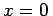

Inhalt Index DeskTop Bronstein

 Funktionen und ihre Darstellung Elementare Funktionen Transzendente Funktionen
Funktionen und ihre Darstellung Elementare Funktionen Transzendente Funktionen


Bei den trigonometrischen Funktionen befindet sich das Argument x oder eine algebraische Funktion von x hinter dem Zeichen oder  .
.
| Beispiel A |
|
|
| Beispiel B |
|
|
| Beispiel C |
|
|
Hinweis: Es ist zu beachten, daß man allgemein betrachtet unter dem Argument einer trigonometrischen Funktion nicht unmittelbar einen Winkel oder einen Kreisbogen, wie bei der geometrischen Definition, sondern eine beliebige Größe versteht. Die trigonometrischen Funktionen können auch ohne Heranziehen geometrischer Vorstellungen rein analytisch definiert werden. Das wird z.B. bei der Darstellung dieser Funktionen mit Hilfe einer Reihenentwicklung deutlich oder bei der Lösung der Differentialgleichung mit den Anfangsbedingungen y=0 und an der Stelle . Das Argument der trigonometrischen Funktionen ist bei dieser Deutung zahlenmäßig gleich dem Bogen in Einheiten des Radianten. Daher kann man bei der Berechnung der trigonometrischen Funktionen vom Argument im Bogenmaß ausgehen.